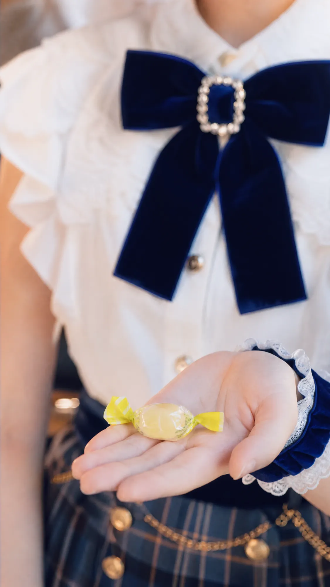
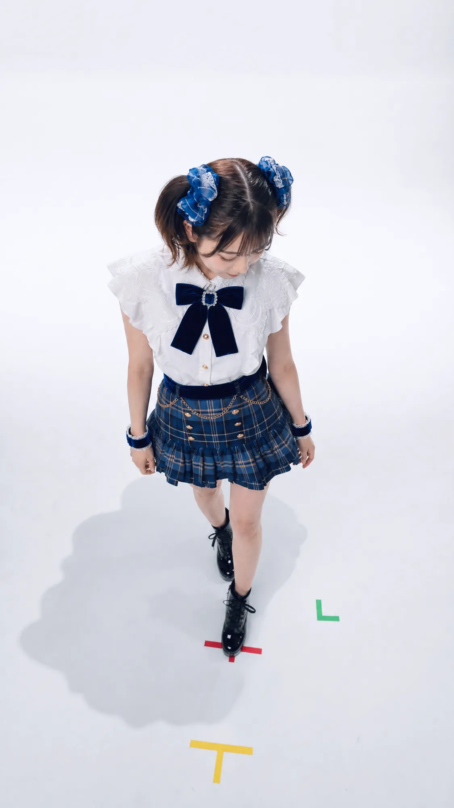

STORY
物語


「届いてた？」
ステージのあと、いつもそう訊いた。
届いていたなら、それで、よかった。
古いポップスと、洗濯機のまわる音。
ステージから帰ってくる場所は、
ちゃんとあった。
——はじめのうちは。
手のひらの、黄色い飴。
甘い。それだけのことが、
どうしてか、長く残る。
仕事は、順調だった。
求められることが、少しずつ増えた。
素のやつ、今日もお願いします。
ある日、メンバーのひとりが、
脱退を告げた。
明日の集合時間を確かめるのと、
同じ温度だった。
立ち位置、変更。以降、この並びで。
右、左、右。
ハンカチの角をなぞると、
まわりの音が、遠くなる。
——遠くなっているのが、
まわりなのか、自分なのか、
ある日から、分からない。
本番前確認、いつも通りで。
泣くつもりは、なかった。
なんで泣いたのか、
自分でも、分からなかった。
その涙を、きれいだと言う人たちがいた。
——いつもの、お願いします。
わたしって、
どこからどこまでだっけ。